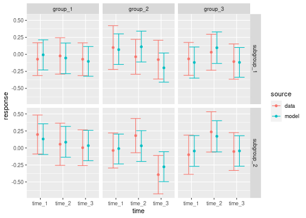
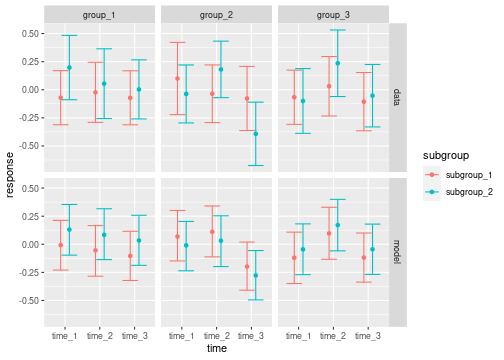
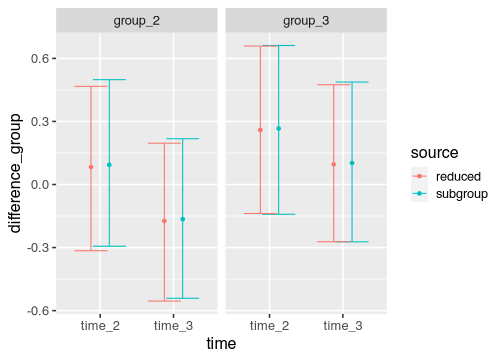

This vignette explains how to incorporate a subgroup variable into an
MMRM using the brms.mmrm package. Here, we assume the
subgroup variable has already been selected in advance (perhaps
pre-specified in a trial protocol) because interactions are anticipated
or of particular interest. Especially if heterogeneous patient
populations are studied, it is important to check that the estimated
overall effect is broadly applicable to relevant subgroups (ICH (1998), EMA
(2019)). It is worth noting, however, that subgroup variable
selection is a thorough process that requires deep domain knowledge,
careful adjustments for multiplicity, and potentially different modeling
approaches, all of which belongs outside the scope of this vignette.
Limitations of one-variable-at-a-time subgroup analyses to detect
treatment effect heterogeneity have been described in the literature
(Kent 2023). For literature on data-driven
subgroup identification methods in clinical trials, we refer to Lipkovich et al. (2017) and Lipkovich et al. (2023).
Data
The subgroup variable must be categorical.
library(brms.mmrm)
library(dplyr)
library(magrittr)
set.seed(0L)
raw_data <- brm_simulate_outline(
n_group = 3,
n_subgroup = 2,
n_patient = 50,
n_time = 3,
rate_dropout = 0,
rate_lapse = 0
) |>
mutate(response = rnorm(n = n()))
raw_data
#> # A tibble: 900 × 6
#> response missing group subgroup time patient
#> <dbl> <lgl> <chr> <chr> <chr> <chr>
#> 1 1.26 FALSE group_1 subgroup_1 time_1 patient_001
#> 2 -0.326 FALSE group_1 subgroup_1 time_2 patient_001
#> 3 1.33 FALSE group_1 subgroup_1 time_3 patient_001
#> 4 1.27 FALSE group_1 subgroup_1 time_1 patient_002
#> 5 0.415 FALSE group_1 subgroup_1 time_2 patient_002
#> 6 -1.54 FALSE group_1 subgroup_1 time_3 patient_002
#> 7 -0.929 FALSE group_1 subgroup_1 time_1 patient_003
#> 8 -0.295 FALSE group_1 subgroup_1 time_2 patient_003
#> 9 -0.00577 FALSE group_1 subgroup_1 time_3 patient_003
#> 10 2.40 FALSE group_1 subgroup_1 time_1 patient_004
#> # ℹ 890 more rowsEach categorical subgroup level should have adequate representation among all treatment groups at all discrete time points. Otherwise, some marginal means of interest may not be estimable.
count(raw_data, group, subgroup, time)
#> # A tibble: 18 × 4
#> group subgroup time n
#> <chr> <chr> <chr> <int>
#> 1 group_1 subgroup_1 time_1 50
#> 2 group_1 subgroup_1 time_2 50
#> 3 group_1 subgroup_1 time_3 50
#> 4 group_1 subgroup_2 time_1 50
#> 5 group_1 subgroup_2 time_2 50
#> 6 group_1 subgroup_2 time_3 50
#> 7 group_2 subgroup_1 time_1 50
#> 8 group_2 subgroup_1 time_2 50
#> 9 group_2 subgroup_1 time_3 50
#> 10 group_2 subgroup_2 time_1 50
#> 11 group_2 subgroup_2 time_2 50
#> 12 group_2 subgroup_2 time_3 50
#> 13 group_3 subgroup_1 time_1 50
#> 14 group_3 subgroup_1 time_2 50
#> 15 group_3 subgroup_1 time_3 50
#> 16 group_3 subgroup_2 time_1 50
#> 17 group_3 subgroup_2 time_2 50
#> 18 group_3 subgroup_2 time_3 50When you create the special classed dataset for
brms.mmrm using brm_data(), please supply the
name of the subgroup variable and a reference subgroup level.
Post-processing functions will use the reference subgroup level to
compare pairs of subgroups: for example, the treatment effect of
subgroup_2 minus the treatment effect of the reference
subgroup level you choose.
data <- brm_data(
data = raw_data,
outcome = "response",
role = "response",
baseline = NULL,
group = "group",
subgroup = "subgroup",
time = "time",
patient = "patient",
reference_group = "group_1",
reference_subgroup = "subgroup_1",
reference_time = "time_1"
)
str(data)
#> brm_data [900 × 5] (S3: brm_data/tbl_df/tbl/data.frame)
#> $ response: num [1:900] 1.263 -0.326 1.33 1.272 0.415 ...
#> $ group : chr [1:900] "group_1" "group_1" "group_1" "group_1" ...
#> $ subgroup: chr [1:900] "subgroup_1" "subgroup_1" "subgroup_1" "subgroup_1" ...
#> $ time : chr [1:900] "time_1" "time_2" "time_3" "time_1" ...
#> $ patient : chr [1:900] "patient_001" "patient_001" "patient_001" "patient_002" ...
#> - attr(*, "brm_outcome")= chr "response"
#> - attr(*, "brm_role")= chr "response"
#> - attr(*, "brm_group")= chr "group"
#> - attr(*, "brm_subgroup")= chr "subgroup"
#> - attr(*, "brm_time")= chr "time"
#> - attr(*, "brm_patient")= chr "patient"
#> - attr(*, "brm_covariates")= chr(0)
#> - attr(*, "brm_reference_group")= chr "group_1"
#> - attr(*, "brm_reference_subgroup")= chr "subgroup_1"
#> - attr(*, "brm_reference_time")= chr "time_1"
#> - attr(*, "brm_levels_group")= chr [1:3] "group_1" "group_2" "group_3"
#> - attr(*, "brm_levels_subgroup")= chr [1:2] "subgroup_1" "subgroup_2"
#> - attr(*, "brm_levels_time")= chr [1:3] "time_1" "time_2" "time_3"
#> - attr(*, "brm_labels_group")= chr [1:3] "group_1" "group_2" "group_3"
#> - attr(*, "brm_labels_subgroup")= chr [1:2] "subgroup_1" "subgroup_2"
#> - attr(*, "brm_labels_time")= chr [1:3] "time_1" "time_2" "time_3"Formula
For subgroup analysis, the formula should have terms that include the
subgroup variable. All plausible interactions are optional via arguments
of brm_formula(). For this specific example, we disable all
interactions except group-subgroup interaction.
formula_subgroup <- brm_formula(
data = data,
group_subgroup_time = FALSE,
subgroup_time = FALSE
)
formula_subgroup
#> response ~ group + group:subgroup + group:time + subgroup + time + unstr(time = time, gr = patient)
#> sigma ~ 0 + timeTo create an analogous non-subgroup reduced model, disable each of the terms that involve the subgroup. This will be useful later on for measuring the impact of the subgroup as a whole, without needing to restrict to a specific level of the subgroup.1
formula_reduced <- brm_formula(
data = data,
group_subgroup = FALSE,
group_subgroup_time = FALSE,
subgroup = FALSE,
subgroup_time = FALSE
)
formula_reduced
#> response ~ group + group:time + time + unstr(time = time, gr = patient)
#> sigma ~ 0 + timeModels
To run the full subgroup and reduced non-subgroup models, use
brm_model() as usual. Remember to supply the appropriate
formula to each case.
model_subgroup <- brm_model(
data = data,
formula = formula_subgroup,
refresh = 0
)
#> Compiling Stan program...
#> Start sampling
model_reduced <- brm_model(
data = data,
formula = formula_reduced,
refresh = 0
)
#> Compiling Stan program...
#> Start samplingMarginals
For the subgroup model, brm_marginal_draws() can
summarize subgroup-specific and non-subgroup-specific marginal means.
The latter is useful for direct comparison with the non-subgroup reduced
model.
draws_subgroup_specific <- brm_marginal_draws(
model = model_subgroup,
data = data,
use_subgroup = TRUE
)
draws_subgroup_comparison <- brm_marginal_draws(
model = model_subgroup,
data = data,
use_subgroup = FALSE
)
draws_reduced <- brm_marginal_draws(
model = model_reduced,
data = data,
use_subgroup = FALSE
)For draws_subgroup_specific, the marginals of the time
difference (change from baseline) and treatment difference are the same
as before, except now they are subgroup-specific.
tibble::as_tibble(draws_subgroup_specific$difference_group)
#> # A tibble: 4,000 × 11
#> .chain .draw .iteration `group_2|subgroup_1|time_2` group_2|subgroup_1|tim…¹
#> <int> <int> <int> <dbl> <dbl>
#> 1 1 1 1 0.167 0.0351
#> 2 1 2 2 0.160 -0.143
#> 3 1 3 3 0.182 -0.125
#> 4 1 4 4 0.288 -0.179
#> 5 1 5 5 -0.0850 -0.314
#> 6 1 6 6 -0.0195 -0.278
#> 7 1 7 7 -0.0925 -0.314
#> 8 1 8 8 0.421 -0.0122
#> 9 1 9 9 0.222 -0.136
#> 10 1 10 10 0.00918 -0.262
#> # ℹ 3,990 more rows
#> # ℹ abbreviated name: ¹`group_2|subgroup_1|time_3`
#> # ℹ 6 more variables: `group_2|subgroup_2|time_2` <dbl>,
#> # `group_2|subgroup_2|time_3` <dbl>, `group_3|subgroup_1|time_2` <dbl>,
#> # `group_3|subgroup_1|time_3` <dbl>, `group_3|subgroup_2|time_2` <dbl>,
#> # `group_3|subgroup_2|time_3` <dbl>In addition, there is a new difference_subgroup table.
The posterior samples in difference_subgroup measure the
differences between each subgroup level and the reference subgroup level
with respect to the treatment effects in
difference_group.
tibble::as_tibble(draws_subgroup_specific$difference_subgroup)
#> # A tibble: 4,000 × 7
#> .chain .draw .iteration `group_2|subgroup_2|time_2` group_2|subgroup_2|tim…¹
#> <int> <int> <int> <dbl> <dbl>
#> 1 1 1 1 0 -5.55e-17
#> 2 1 2 2 0 0
#> 3 1 3 3 5.55e-17 -2.78e-17
#> 4 1 4 4 0 0
#> 5 1 5 5 0 0
#> 6 1 6 6 0 -5.55e-17
#> 7 1 7 7 0 0
#> 8 1 8 8 1.11e-16 5.55e-17
#> 9 1 9 9 0 5.55e-17
#> 10 1 10 10 0 5.55e-17
#> # ℹ 3,990 more rows
#> # ℹ abbreviated name: ¹`group_2|subgroup_2|time_3`
#> # ℹ 2 more variables: `group_3|subgroup_2|time_2` <dbl>,
#> # `group_3|subgroup_2|time_3` <dbl>The brm_marginal_summaries() and
brm_marginal_probabilities() are automatically aware of any
subgroup-specific marginals from brm_marginal_draws().
Notably, brm_marginal_summaries() summarizes the subgroup
differences in the difference_subgroup table from
brm_marginal_draws().
summaries_subgroup_specific <- brm_marginal_summaries(
draws_subgroup_specific,
level = 0.95
)
summaries_subgroup_comparison <- brm_marginal_summaries(
draws_subgroup_comparison,
level = 0.95
)
summaries_reduced <- brm_marginal_summaries(
draws_reduced,
level = 0.95
)
summaries_subgroup_specific
#> # A tibble: 250 × 7
#> marginal statistic group subgroup time value mcse
#> <chr> <chr> <chr> <chr> <chr> <dbl> <dbl>
#> 1 difference_group lower group_2 subgroup_1 time_2 -0.314 0.0116
#> 2 difference_group lower group_2 subgroup_1 time_3 -0.542 0.00881
#> 3 difference_group lower group_2 subgroup_2 time_2 -0.314 0.0116
#> 4 difference_group lower group_2 subgroup_2 time_3 -0.542 0.00881
#> 5 difference_group lower group_3 subgroup_1 time_2 -0.118 0.00782
#> 6 difference_group lower group_3 subgroup_1 time_3 -0.277 0.0152
#> 7 difference_group lower group_3 subgroup_2 time_2 -0.118 0.00782
#> 8 difference_group lower group_3 subgroup_2 time_3 -0.277 0.0152
#> 9 difference_group mean group_2 subgroup_1 time_2 0.0882 0.00443
#> 10 difference_group mean group_2 subgroup_1 time_3 -0.171 0.00412
#> # ℹ 240 more rowsbrm_marginal_probabilities() still focuses on treatment
effects, not on differences between pairs of subgroup levels.
brm_marginal_probabilities(
draws = draws_subgroup_specific,
threshold = c(-0.1, 0.1),
direction = c("greater", "less")
)
#> # A tibble: 16 × 6
#> direction threshold group subgroup time value
#> <chr> <dbl> <chr> <chr> <chr> <dbl>
#> 1 greater -0.1 group_2 subgroup_1 time_2 0.825
#> 2 greater -0.1 group_2 subgroup_1 time_3 0.357
#> 3 greater -0.1 group_2 subgroup_2 time_2 0.825
#> 4 greater -0.1 group_2 subgroup_2 time_3 0.357
#> 5 greater -0.1 group_3 subgroup_1 time_2 0.968
#> 6 greater -0.1 group_3 subgroup_1 time_3 0.854
#> 7 greater -0.1 group_3 subgroup_2 time_2 0.968
#> 8 greater -0.1 group_3 subgroup_2 time_3 0.854
#> 9 less 0.1 group_2 subgroup_1 time_2 0.525
#> 10 less 0.1 group_2 subgroup_1 time_3 0.918
#> 11 less 0.1 group_2 subgroup_2 time_2 0.525
#> 12 less 0.1 group_2 subgroup_2 time_3 0.918
#> 13 less 0.1 group_3 subgroup_1 time_2 0.205
#> 14 less 0.1 group_3 subgroup_1 time_3 0.504
#> 15 less 0.1 group_3 subgroup_2 time_2 0.205
#> 16 less 0.1 group_3 subgroup_2 time_3 0.504brm_marignal_data() can produce either subgroup-specific
or non-subgroup-specific summary statistics.
summaries_data_subgroup <- brm_marginal_data(
data = data,
level = 0.95,
use_subgroup = TRUE
)
summaries_data_subgroup
#> # A tibble: 126 × 5
#> statistic group subgroup time value
#> <chr> <chr> <chr> <chr> <dbl>
#> 1 lower group_1 subgroup_1 time_1 0.170
#> 2 lower group_1 subgroup_1 time_2 0.244
#> 3 lower group_1 subgroup_1 time_3 0.169
#> 4 lower group_1 subgroup_2 time_1 0.484
#> 5 lower group_1 subgroup_2 time_2 0.364
#> 6 lower group_1 subgroup_2 time_3 0.266
#> 7 lower group_2 subgroup_1 time_1 0.421
#> 8 lower group_2 subgroup_1 time_2 0.221
#> 9 lower group_2 subgroup_1 time_3 0.208
#> 10 lower group_2 subgroup_2 time_1 0.220
#> # ℹ 116 more rows
summaries_data_reduced <- brm_marginal_data(
data = data,
level = 0.95,
use_subgroup = FALSE
)
summaries_data_reduced
#> # A tibble: 63 × 4
#> statistic group time value
#> <chr> <chr> <chr> <dbl>
#> 1 lower group_1 time_1 0.251
#> 2 lower group_1 time_2 0.219
#> 3 lower group_1 time_3 0.143
#> 4 lower group_2 time_1 0.237
#> 5 lower group_2 time_2 0.252
#> 6 lower group_2 time_3 -0.0331
#> 7 lower group_3 time_1 0.104
#> 8 lower group_3 time_2 0.332
#> 9 lower group_3 time_3 0.110
#> 10 mean group_1 time_1 0.0632
#> # ℹ 53 more rowsModel comparison
Metrics from brms can compare the full subgroup and
reduced non-subgroup model to assess the effect of the subgroup as a
whole. We can easily compute the widely applicable information criterion
(WAIC) of each model.
brms::waic(model_subgroup)
#>
#> Computed from 4000 by 900 log-likelihood matrix
#>
#> Estimate SE
#> elpd_waic -1275.6 20.0
#> p_waic 19.9 1.0
#> waic 2551.2 39.9
brms::waic(model_reduced)
#>
#> Computed from 4000 by 900 log-likelihood matrix
#>
#> Estimate SE
#> elpd_waic -1274.1 20.0
#> p_waic 17.3 0.9
#> waic 2548.2 40.1Likewise, we can compare the models in terms of the expected log predictive density (ELPD) based on approximate Pareto-smoothed leave-one-out cross-validation.
loo_subgroup
#>
#> Computed from 4000 by 900 log-likelihood matrix
#>
#> Estimate SE
#> elpd_loo -1275.7 20.0
#> p_loo 19.9 1.0
#> looic 2551.3 39.9
#> ------
#> Monte Carlo SE of elpd_loo is 0.1.
#>
#> All Pareto k estimates are good (k < 0.5).
#> See help('pareto-k-diagnostic') for details.
loo_reduced
#>
#> Computed from 4000 by 900 log-likelihood matrix
#>
#> Estimate SE
#> elpd_loo -1274.1 20.0
#> p_loo 17.3 0.9
#> looic 2548.3 40.1
#> ------
#> Monte Carlo SE of elpd_loo is 0.1.
#>
#> All Pareto k estimates are good (k < 0.5).
#> See help('pareto-k-diagnostic') for details.
loo::loo_compare(loo_subgroup, loo_reduced)
#> elpd_diff se_diff
#> model_reduced 0.0 0.0
#> model_subgroup -1.5 1.6Visualization
brm_plot_draws() is aware of any subgroup-specific
marginal means.
brm_plot_draws(draws_subgroup_specific$difference_group)
You can adjust visual aesthetics to compare subgroup levels side by side if subgroup level is the primary comparison of interest.
brm_plot_draws(
draws_subgroup_specific$difference_group,
axis = "subgroup",
facet = c("time", "group")
)
The following function call compares the subgroup model results against the subgroup data.
brm_plot_compare(
data = summaries_data_subgroup,
model = summaries_subgroup_specific,
marginal = "response"
)
You can adjust plot aesthetics to view subgroup levels side by side as the primary comparison of interest.
brm_plot_compare(
data = summaries_data_subgroup,
model = summaries_subgroup_specific,
marginal = "response",
compare = "subgroup",
axis = "time",
facet = c("group", "source")
)
We can also visually compare the treatment effects of the full subgroup and reduced non-subgroup models, marginalizing over subgroup levels in both cases.
brm_plot_compare(
subgroup = summaries_subgroup_comparison,
reduced = summaries_reduced,
marginal = "difference_group"
)